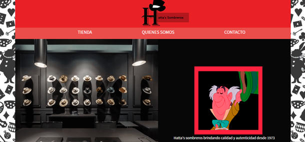
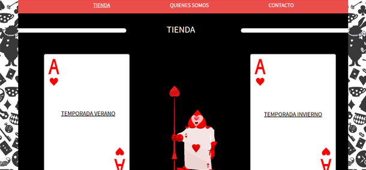
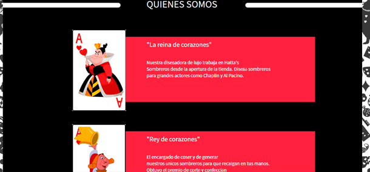
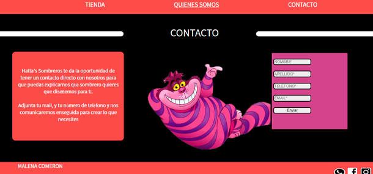

- 
- 
- 
- 
1-El index de la página proporciona una galería slide dónde el usuario puede observar el local y trabajos de la marca. Contiene un "nav" para que pueda navegar por la página sin dificultad alguna.
2-La "Tienda" de la página cuenta con dos secciones dónde el usuario puede seguir entrando más a la web. Tiene la opción de ir a la tienda donde se muestran los productos de invierno, y otra los productos de verano.
3-La anteúltima sección cuenta con ofrecerle al usuario un registro de las personas que participan en la marca Hatta's. Intervienen tres personajes y se optó por integrar a la Reina y Rey de corazones, pertenecientes a la trama de Alicia en el País de las Maravillas.
4- La última sección le permite al usuario llenar un formulario para que se lleve a cabo el pedido solicitado. Un formulario corto y fácil para que sea completado en poco tiempo.